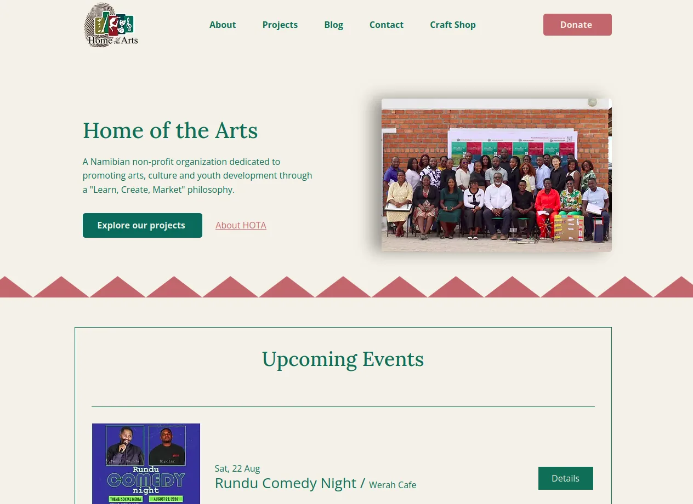
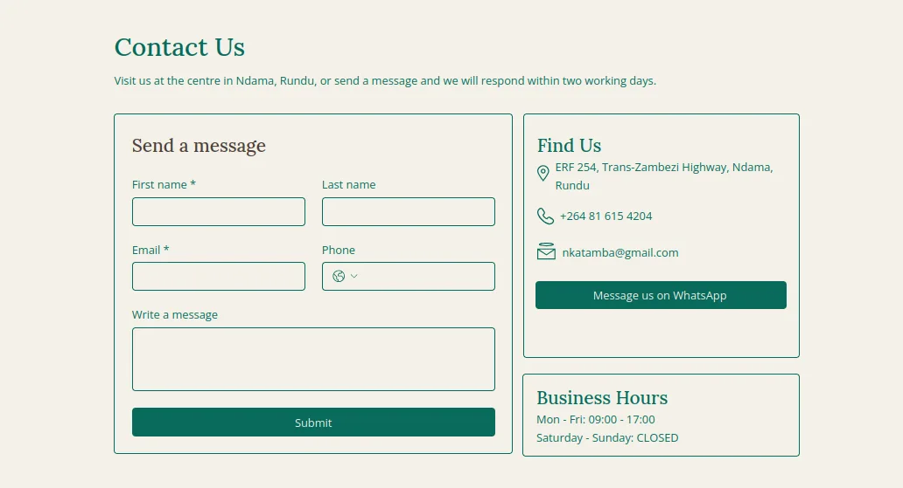
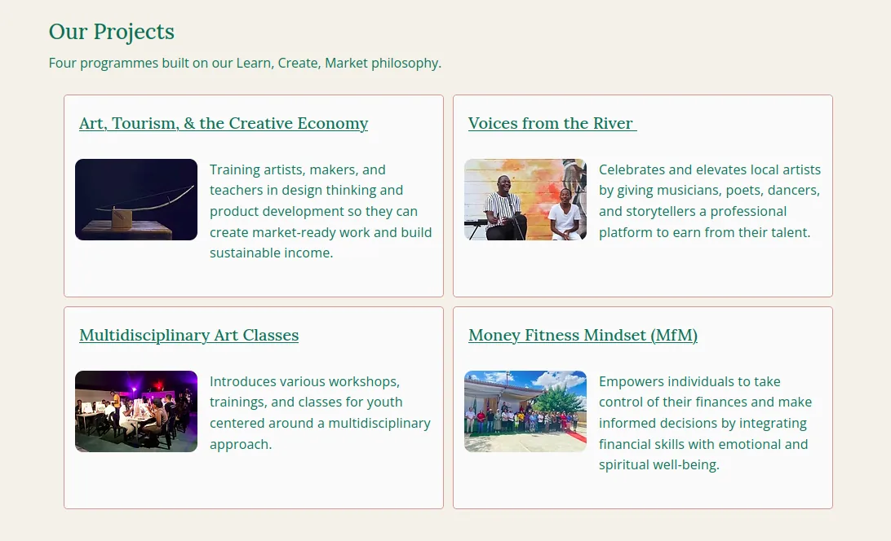
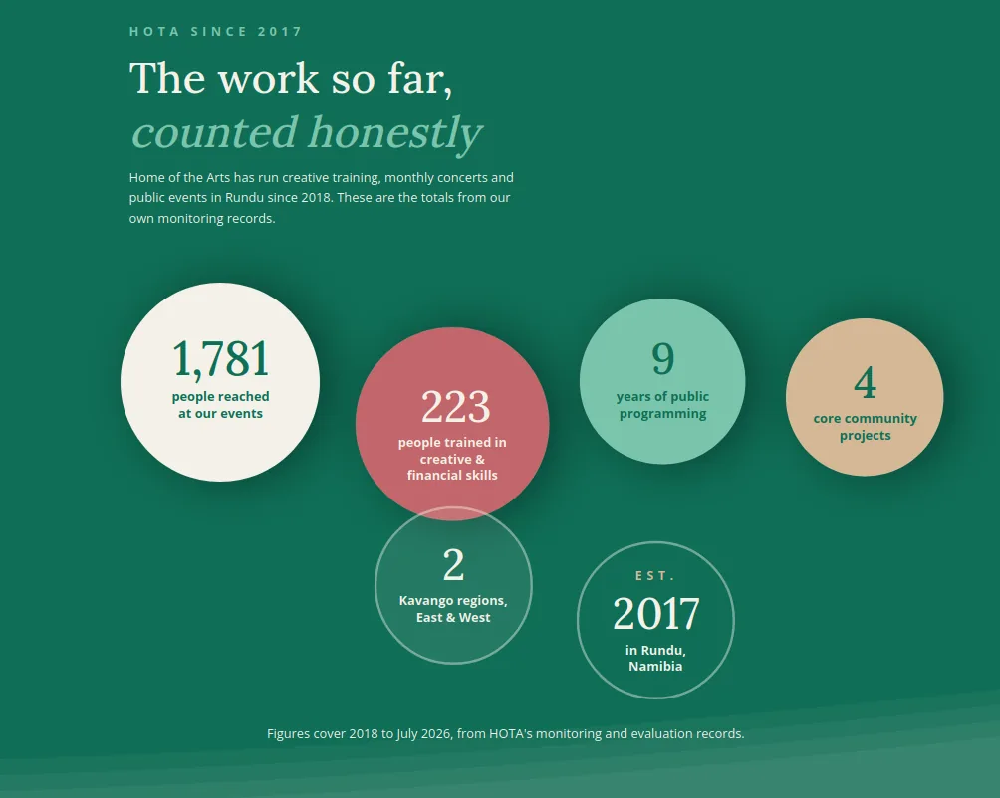
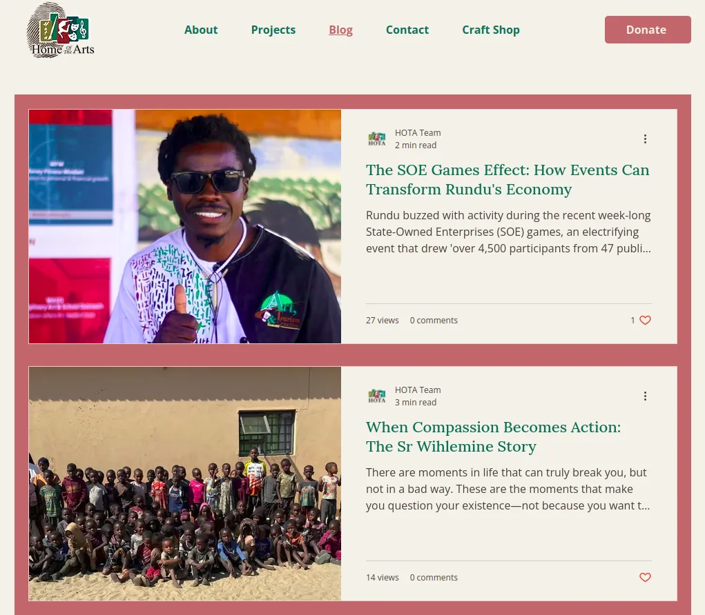
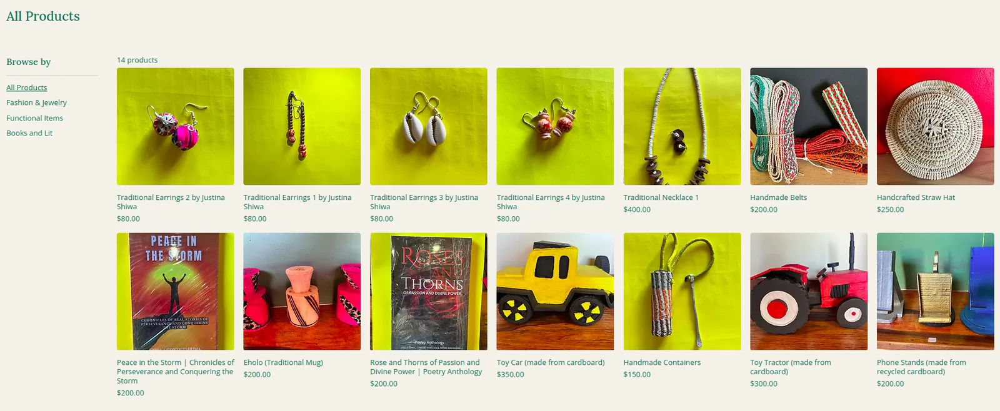

Designed and built the website for HOTA Art Design, a Section 21 non-profit in Namibia working at the intersection of arts, tourism, and community development. The goal was to establish real institutional credibility for the organization — and to make sure a five-person team could keep the site running long after handover.
HOTA is small: two full-time staff, one contractor, and two long-term volunteers. Before this project, the organization's entire digital presence lived on a handful of phones. Its Facebook page operated under the name of Werah Cafe Theater — the separate entity that runs the premises HOTA works out of — meaning HOTA's public identity was visible only through someone else's brand. Two Instagram accounts had been created on former staff members' personal devices and were unrecoverable when those staff left.
Beyond that Facebook page, there was nowhere for a donor, partner, or member of the public to go. That was a concrete funding problem, not just a cosmetic one: HOTA struggles to sustain funding between donor cycles, and donor applications routinely ask for a website.
I scoped the site with HOTA's President and Founder, working from the organization's actual operational needs rather than a generic template.

One early decision was the domain. HOTA is legally registered as HOTA Art Design, but is commonly known as Home of the Arts — which is also the name of a prominent Australian arts organization. We chose hotartdesign.org to stay true to the legal name and avoid any unnecessary conflict.
My role had two halves.
Design and build. The HOTA site draws on a warm, sepia-toned palette — cream backgrounds, deep forest green, and a terracotta-red accent — paired with a serif display face for headings against a clean sans-serif for everything else. The warm, earthy tones read as considered and specific to place rather than a generic template, which matters for an arts and community-development NGO working out of Namibia: donors and partners are meeting the organization's actual visual identity, not a stock non-profit look. The layout stays plain and legible underneath that — bordered content blocks, generous whitespace, and simple card grids for projects and events — so the personality lives in color and type rather than in complexity a small team would have to maintain.


The site was designed with the assistance of Claude Code and built in Wix — a deliberately mainstream choice. A CMS that non-technical staff can realistically operate mattered more than technical elegance.
Sustainability and handover. I trained the team on account administration (website email, credentials, login) and ran short sessions on the fundamentals — DNS, hosting, CMS, brand identity. All site information is now stored encrypted and accessible to the team in the cloud.
After launch, I led one-on-one training with HOTA's journalism and media intern, who now holds full admin access alongside one other member and has a working knowledge of maintaining the site that keeps growing. Only three of five members have reliable computer and internet access, so building depth rather than a single point of failure was the priority — when the intern moves on, the site continues.

